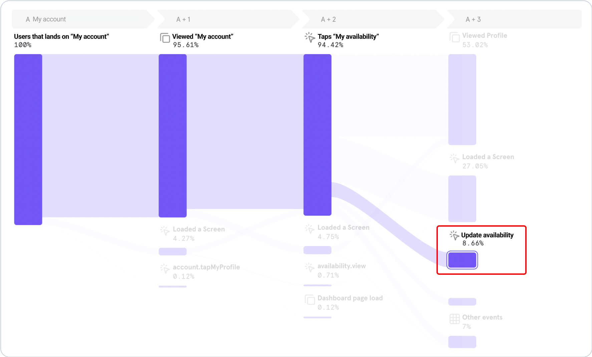

Product:
Hireup (iOS and Android)
Date:
2022
Role:
Principal Product Designer
I’m showcasing how we’ve changed user behaviour by design and increased the booking (connection) rate on Hireup by +12%


A new design that drives user behaviour. The new feature informs and educates support workers on how to keep their availability updated. It automatically sets support workers who have not been active on the platform for over 30 days to “not looking for work”. This leads to more responsiveness from workers to clients on the Hireup platform.
Hireup is the largest online network of support workers in Australia for people with disabilities.
The software is a marketplace that matches people with disabilities (“clients”) with support workers (“workers”).

In order to support our company-wide quarter objective of improving the discovery and connection between support workers (workers) and people with disabilities (clients), we started to investigate complaints from clients about workers not getting back to them.
We noticed from our data that 39.1% of clients who were looking for support were messaging workers that hadn’t been active on the platform but had kept their availability status as ‘Looking for support work'.
A support worker at Hireup can choose to update their availability to ‘Looking for work” or “Not looking for work”. This means when they are looking for work their profile will be listed in the client search and they can receive job alerts from clients that are looking for a support worker.
For more clarity on the problem, I ran lean research - sent an email survey asking workers about how they use and update their availability status”. Early insight on this was that workers set their status as “open to work” and forget to update their availability later.
Most of the respondents set it during their account creation and onboarding. Another reason given was that they leave their status open only in case the "right" job arises.
A support worker at Hireup can choose to update their availability to ‘Looking for work” or “Not looking for work”. This means when they are looking for work their profile will be listed in the client search and they can receive job alerts from clients that are looking for a support worker.
For more clarity on the problem, I ran lean research - sent an email survey asking workers about how they use and update their availability status”. Early insight on this was that workers set their status as “open to work” and forget to update their availability later.
Most of the respondents set it during their account creation and onboarding. Another reason given was that they leave their status open only in case the "right" job arises.
How would workers update their availability status?
They would tap on their profile avatar which would open ‘My account’ page. Inside this page, the user would skim through more options until they find ‘My Availability’, which would open the page where they could switch their “Looking for support work” status to on/off.

By analysing the data, I noticed that few workers were tapping to update their availability.
This problem impacted Hireup’s connection rate. “Connection” is the first booking between a client and a support worker. We noticed a drop in clients creating a new connection with a support worker, meaning a low connection rate. This also impacted client activation, which in turn impacted user churn.
Response rate
• Workers that respond (within 3 days) to clients' first message
Connection rate
• Connections are created within 7 days after the first message from the client
Availability update
• % of workers that update their availability
The solution proposed, led by the data team and the product manager, was to automatically turn off the availability status for workers who maintain their status as “Looking for Support Work” but have not been active on the platform in the last 30 days. This would result in those inactive workers being filtered out from search results.
This solved part of the problem
I shared my learnings about the common behaviour of workers setting and forgetting their availability to ‘open for work’. I was also thinking about users that might decide to provide services for Hireup again after some time off. I asked the data team about reactivations and flagged my team that workers could reactivate after being inactive. They might not know they had to update their availability to “Looking for support work”.

We could see that there was a large spike in reactivations from inactive support workers, seasonally, around January - February.
Because of this, we predicted that these workers that planned to reactivate might not manually switch their availability back to ‘Looking for work’, so their profile would not appear on search results. This would result in them potentially missing out on work opportunities.
There were discussions in the team of simply reversing the mechanism to automatically switch reactivated support workers back to “Looking for work”. I was concerned about the assumption that workers who would be back on the platform would be 'Looking for work' as they may or may not be. A scenario I used to explain my line of thought was Linkedin - when people log on to Linkedin, it doesn’t mean they want their profile to say ‘open to work’.
Workers who have returned to the platform after being inactive may not get new jobs on Hireup. This is because the software triggers the worker's availability status to 'Not Open for Work' when they remain 30 days without using the platform (inactive user).
How might we design an experience that makes it easy for current active workers and workers who return to the platform after being inactive to identify and understand what their availability status means and why it is important to keep it up to date?
I started by organising the workload according to user input touchpoints:
Surface toggle on my account
There was a debate on where to place this feature in our software, the PM suggested creating a new module with a switch where users could easily interact with it directly from the home screen, but I argued that it should stay in "My Account" to maintain consistency and reduce cognitive load. To help guide my arguments, I developed themes such as scalability, future-proofing, and consistency. By focusing on these principles, I was able to articulate my thoughts clearly and convince the team to keep the feature where it was. This experience taught me the importance of having a strong set of principles to guide decision-making in software design.
I've recommended to change the microcopy from "Looking for support work / Not looking for support work" to a more direct and simple, plain language that is easy to understand for everyone.
Thought process and design evolution
The process to decide on a solution was through design iteration based on feedback from multiple teams involved in the project and insights from user research.

Status signifier on avatar
This solution brought visibility of workers’ availability status across all main app pages, as it was consistently at the top of the nav bar. The use of the “Bag” iconography across other features of the software (the same icon used on jobs) made this pattern easy to understand and recognise.
Thought process and design evolution
This solution would also educate workers on what it means to turn it on/off, driving a key behaviour for Hireup.

The Design Process Included:
This solution would also educate workers on what it means to turn it on/off, driving a key behaviour for Hireup.

To measure and control risks, the team planned to release this feature by using experimentation and testing with cohorts.
I worked with the engineers to implement the designs, and it was working and looking great!
To make sure the workers were informed about the change, I worked with the marketing team to make sure we tightened up a clear communication to workers within the new release. This communication was sent to workers who were automatically set to “not looking for work”. They were notified using a mix of push, SMS and email. They receive a warning after 25 days of inactivity and are switched off, then also informed at the 30-day mark.

Setting workers to “not looking for work” was done in stages and comms were sent out to workers that may have been impacted by the change.
We also introduced a new feature that communicates important changes to users that return to the app. This helps to gather context in case they miss comms for any reason. They would see it when they are back on the app.

By monitoring our data, we noticed an increase of +46.24% inactive workers returning to the platform.
Experimenting with cohorts
A subset of workers in Sydney and Melbourne markets were grouped as the control group

Response rate for the experimental group increased from 39.1% to 45.8%.

Connection rate for the experimental group increased from 3% to 5.%
An increase of +10% workers updating their availability.
Overall impact
What's next?
Continue to monitor how this affects important client experience metrics. We want to learn something statistically significant about messages, we know that message is the first step before a connection between a worker and a client. Next, I would use the learnings here to improve the message feature.


How I’ve automated data entry and improved the experience of those applying for an Electronic Travel Authority (ETA) visa before travelling to Australia

Building more than just a product, a brand experience for Qantas Entertainment

How to increase app downloads by +70% by connecting entertainment services in the flagship app “Qantas Airways”